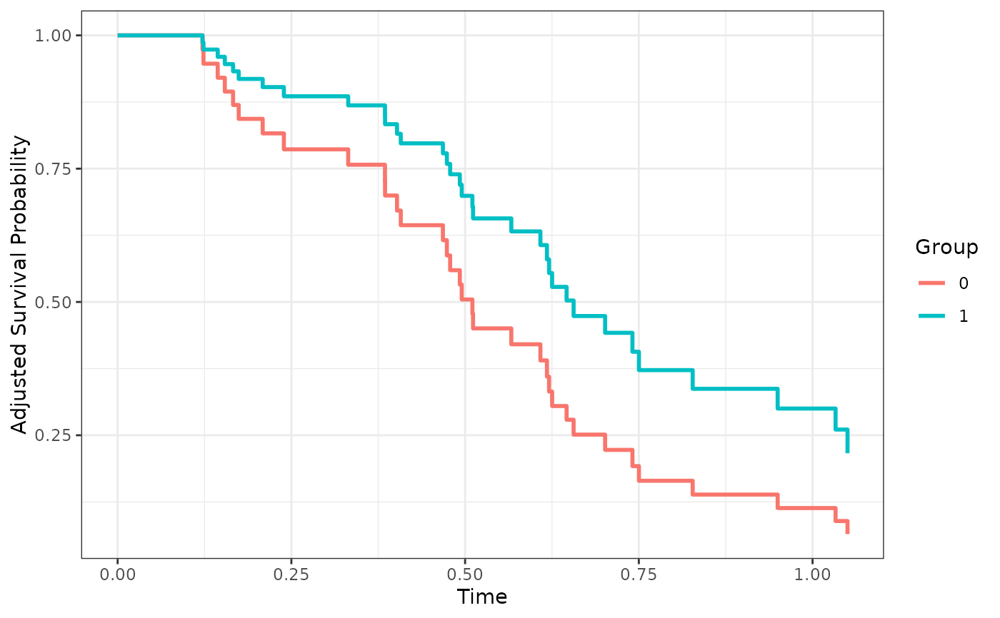

Plot Confounder-Adjusted Survival Curves
plot.adjustedsurv.RdA function to graphically display confounder-adjusted survival curves which where previously estimated using the adjustedsurv function. The user can customize the plot using a variety of options. Internally it uses the ggplot2 package, so additional not implemented features can be added using the standard ggplot2 syntax. This function also includes the option to use isotonic regression on the survival curves, which is of benefit if the estimated curves are not monotone.
Usage
# S3 method for adjustedsurv
plot(x, conf_int=FALSE, max_t=Inf,
iso_reg=FALSE, force_bounds=FALSE,
use_boot=FALSE, cif=FALSE, color=TRUE,
linetype=FALSE, facet=FALSE,
line_size=1, line_alpha=1, xlab="Time",
ylab="Adjusted Survival Probability",
title=NULL, subtitle=NULL, legend.title="Group",
legend.position="right",
gg_theme=ggplot2::theme_classic(),
ylim=NULL, custom_colors=NULL,
custom_linetypes=NULL,
single_color=NULL, single_linetype=NULL,
conf_int_alpha=0.4, steps=TRUE,
x_breaks=ggplot2::waiver(), x_n_breaks=NULL,
y_breaks=ggplot2::waiver(), y_n_breaks=NULL,
additional_layers=list(),
median_surv_lines=FALSE, median_surv_size=0.5,
median_surv_linetype="dashed",
median_surv_color="black", median_surv_alpha=1,
median_surv_quantile=0.5,
censoring_ind="none", censoring_ind_size=0.5,
censoring_ind_alpha=1, censoring_ind_shape=17,
censoring_ind_width=NULL,
risk_table=FALSE, risk_table_type="n_at_risk",
risk_table_stratify=FALSE, risk_table_height=0.25,
risk_table_xlab=xlab, risk_table_ylab="default",
risk_table_title="default", risk_table_title_size=14,
risk_table_title_position="left",
risk_table_y_vjust=5, risk_table_theme=gg_theme,
risk_table_size=4.2, risk_table_alpha=1,
risk_table_color="black", risk_table_family="sans",
risk_table_fontface="plain", risk_table_reverse=TRUE,
risk_table_stratify_color=TRUE,
risk_table_custom_colors=custom_colors,
risk_table_use_weights=TRUE, risk_table_digits=1,
risk_table_format=TRUE, risk_table_warn=TRUE,
risk_table_additional_layers=list(),
...)Arguments
- x
An
adjustedsurvobject created using theadjustedsurvfunction.- conf_int
A logical variable indicating whether the confidence intervals should be drawn.
- max_t
A number indicating the latest survival time which is to be plotted.
- iso_reg
A logical variable indicating whether the estimates should be monotonized using isotonic regression. See details.
- force_bounds
A logical variable indicating whether the 0 and 1 bounds of the survival probabilities should be forced in the plot. See details.
- use_boot
A logical variable denoting whether the bootstrapped estimates should be used for the curves and their confidence intervals. Can only be used if they were calculated. See
adjustedsurv.- cif
If
TRUEthe cumulative incidence functions are drawn instead of the survival curves. Those are calculated by taking 1 - the adjusted survival probability. IfFALSE(default) the usual survival curves are shown.- color
A logical variable indicating whether the curves should be colored differently. The
custom_colorsargument can be used to directly specify which colors to use. Alternatively thesingle_colorargument can be used if everything should have the same color.- linetype
A logical variable indicating whether the curves should have different linetypes. The
custom_linetypesargument can be used to directly specify which linetypes to use. Alternatively thesingle_linetypeargument can be used if all curves should have the same linetype.- facet
A logical variable indicating whether the curves should be in different facets.
- line_size
A number controlling the thickness of the survival curves.
- line_alpha
A number controlling the transparency level of the survival curves.
- xlab
A character string to be used as the X-Axis label of the plot.
- ylab
A character string to be used as the Y-Axis label of the plot.
- title
A character string to be used as the title of the plot. Set to
NULLif no title should be used.- subtitle
A character string to be used as the subtitle of the plot. Set to
NULLif no subtitle should be used.- legend.title
A character string to be used as the title of the legend. Set to
NULLif no legend should be included.- legend.position
A character string specifying the position of the legend. Ignored if
legend_title=NULL.- gg_theme
A
ggplot2theme object which will be used for the plot.- ylim
A numeric vector of length two, specifying the limits of the Y-Axis. Set to
NULLto use theggplot2default values.- custom_colors
A (named) vector to specify the colors of each adjusted survival curve and possibly its confidence region. Set to
NULLto use theggplot2default values. Ignored ifcolor=FALSE.- custom_linetypes
A (named) vector to specify the linetype of each adjusted survival curve. Set to
NULLto use theggplot2default values. Ignored ifcolor=FALSE. Ignored iflinetype=FALSE.- single_color
A single color to use for every survival curve, irrespective of group status. If
coloris specified as well this argument will override it, but also generate a warning. Set toNULL(default) to ignore this argument.- single_linetype
A single linetype to use for every survival curve, irrespective of group status. If
linetypeis specified as well this argument will override it, but also generate a warning. Set toNULL(default) to ignore this argument.- conf_int_alpha
A number indicating the level of transparency that should be used when drawing the confidence regions.
- steps
A logical variable indicating whether the survival curves should be plotted as a step function or using straight lines. Straight lines should not be used with a simple Kaplan-Meier estimator. It is recommended to only use straight lines when a sufficiently fine grid of time points was used in the estimation step.
- x_breaks
An optional numeric vector specifying the breaks on the x-axis. These will also be used in the risk table if
risk_table=TRUE. Internally, this is passed to thebreaksargument of thescale_x_continuousfunction.- x_n_breaks
An optional positive number specifying the number of breaks on the x-axis. Internally, this is passed to the
n.breaksargument of thescale_x_continuousfunction.- y_breaks
An optional numeric vector specifying the breaks on the y-axis. Internally, this is passed to the
breaksargument of thescale_y_continuousfunction.- y_n_breaks
An optional positive number specifying the number of breaks on the y-axis. Internally, this is passed to the
n.breaksargument of thescale_y_continuousfunction.- additional_layers
An optional list of objects that should be added to the survival curve plot. Can be useful to customize the plot further when also using
risk_table=TRUE.- median_surv_lines
Whether to draw indicator lines for the median survival times, which makes it easier to read those off the curves. Survival curves with undefined median survival times receive no lines.
- median_surv_size
The size of the median survival indicator lines. Ignored if
median_surv_lines=FALSE.- median_surv_linetype
The linetype of the median survival indicator lines. Ignored if
median_surv_lines=FALSE.- median_surv_color
The color of the median survival indicator lines. Ignored if
median_surv_lines=FALSE.- median_surv_alpha
The transparency level of the median survival indicator lines. Ignored if
median_surv_lines=FALSE.- median_surv_quantile
The survival quantile which should be drawn. To draw the median survival time, set this parameter to 0.5 (default).
- censoring_ind
What kind of indicator to plot for censored observations on the survival curves. Must be one of
"none"(plotting no indicators at all, the default),"lines"(plotting small vertical lines) and"points"(plotting points). Those will be affected bylinetypeandcoloras well.- censoring_ind_size
A numeric value specifying the size of the censoring indicators. Ignored if
censoring_ind="none".- censoring_ind_alpha
A numeric value specifying the alpha level of the censoring indicators. Ignored if
censoring_ind="none".- censoring_ind_shape
A numeric value specifying the shape of the censoring indicators when using
censoring_ind="points". Ignored otherwise. For available shapes see?geom_point.- censoring_ind_width
A numeric value specifying the width of the censoring indicators. Ignored unless
censoring_ind="lines". By default (censoring_ind_width=NULL) the width of the censoring indicators is equal to 5 percent of the plot height.- risk_table
Either
TRUEorFALSE, indicating whether a risk table should be added below the plot or not. Please see details before using this option, since there is still no agreed upon way to include them for adjusted survival curves. Internally, a separate plot is created for the table and added to the survival curve plot using theplot_gridfunction of the cowplot package. The output is still aggplotobject, but it may not be possible to change some aspects of that object anymore. Note also that all arguments starting withrisk_table_indicate arguments used to customize risk tables. These will be ignored ifrisk_table=FALSE.- risk_table_type
A single character string specifying what kind of risk table should be created. Has to be one of
"n_at_risk"(number at risk, the default),"n_cens"(cumulative number of censored people up to time \(t\)) or"n_events"(cumulative number of events up to time \(t\)). Note that these numbers will be weighted if and only ifrisk_table_use_weightsis set toTRUEand the method used to adjust the survival curves was one ofc("iptw_km", "iptw_cox", "iptw_pseudo"). Otherwise, unadjusted numbers are returned. See details.- risk_table_stratify
Either
TRUEorFALSE, indicating whether the risk table should be stratified byvariable.- risk_table_height
A single number between 0 and 1, indicating the proportion of the resulting plot that should be used for the risk table. By making this number larger, the "height" of the risk table is increased. Defaults to 0.25, e.g. about a quarter of the plot is reserved for the risk table.
- risk_table_xlab
A single character string specifying the x-axis label for the risk table. By default, the same name is used as was used for the survival curve plot.
- risk_table_ylab
A single character string specifying the y-axis label of the risk table. By default this is set to
"default", which is replaced internally depending on the suppliedrisk_table_type,risk_table_use_weightsandrisk_table_stratifyarguments. Set toNULLto use no y-axis label.- risk_table_title
A single character string specifying the title of the risk table. By default this is set to
"default", which is replaced internally depending on the suppliedrisk_table_type,risk_table_use_weightsandrisk_table_stratifyarguments. Set toNULLto use no title.- risk_table_title_size
A single positive number specifying the size of the title of the risk table.
- risk_table_title_position
One of
c("left", "middle", "right"), specifying where the title of the risk table should be put. Defaults to"left".- risk_table_y_vjust
A single positive number specifying the distance between the y-axis and the y-axis label. Is only used when
risk_table_stratify=FALSE. Set to 5 by default to make the y-axis label align with the y-axis label of the survival curve plot.- risk_table_theme
A
ggplot2theme object which will be used for the risk table. Defaults to the same theme used for the survival curve plot, but may also be different.- risk_table_size
A single positive number specifying the size of the numbers used in the risk table.
- risk_table_alpha
A single number between 0 and 1 specifying the alpha level of the numbers in the risk table.
- risk_table_color
A single character string specifying the color of the numbers in the risk table. Only used when
risk_table_stratify=FALSE. To change the colors when usingrisk_table_stratify=TRUE, use therisk_table_custom_colorsargument.- risk_table_family
A single character string specifying the text family that should be used for the numbers in the risk table.
- risk_table_fontface
A single character string specifying the fontface of the text used to write the numbers in the risk table. Must be one of
c("plain", "bold", "italic", "bold.italic"). Defaults to"plain".- risk_table_reverse
Whether to reverse the order of groups in the risk table when using
risk_table_stratify=TRUE.- risk_table_stratify_color
Either
TRUEorFALSE, indicating whether the risk table should have different colors for different groups. Only used whenrisk_table_stratify=TRUE.- risk_table_custom_colors
A vector of custom colors used when both
risk_table_stratifyandrisk_table_stratify_colorare set toTRUE. By default this uses the same colors as the survival curve plot, but it doesn't have to.- risk_table_use_weights
Whether to use weights in the calculation of the values shown in the risk table or not. By default weights are used when they were used in the calculation of the adjusted survival curves as well. Otherwise, unadjusted risk tables are returned. Note that since the sum of all weights is not necessarily equal to the number of individuals in the dataset (unless
stabilize=TRUEwas used in the originaladjustedsurvcall), these numbers may seem odd. If weights are used it is also highly likely that the results will not be integers. Seerisk_table_digits.- risk_table_digits
A single number specifying how many digits should be used when rounding the numbers presented in the risk table. Since unadjusted calculations always result in integer values, this argument is only relevant when weights or multiple imputation were used. See
?round.- risk_table_format
Either
TRUEorFALSE, indicating whether theformat()function should be called on the numbers included in the risk table. This defaults toTRUE, so that all numbers have an equal number of digits after the decimal point. This is only important when using either multiply imputed data or weighted risk tables, because otherwise the numbers will only be integers anyways.- risk_table_warn
Either
TRUEorFALSE, indicating whether the user should be warned about some subtleties when using risk tables. We strongly urge the user to read the details before ignoring the warnings. Set toFALSEto ignore all warnings.- risk_table_additional_layers
An optional list of objects that should be added to the risk table plot. Can be used to further customize the risk table using standard
ggplot2syntax. Explained in more detail in the vignette on plot customization.- ...
Currently not used.
Details
On the use of Risk Tables
Due to popular demand, this function now also supports adding risk tables below the survival curves as of version 0.12.0. In previous versions of this package, this was not implemented due to the unclear interpretation of the risk tables depending on the method. When using the standard Kaplan-Meier method, the number of people at risk (risk_table_type="n_at_risk") is used directly to obtain the survival curve estimates. Showing the number at risk or some related numbers (such as number of events etc.) makes sense and is a nice way to communicate uncertainty of the results. However, most methods in this package DO NOT use number of people at risk to arrive at the survival curve estimates. The only methods that do so are "km" (the classic unadjusted Kaplan-Meier method) as well as "iptw_km" and "iptw_cox". The latter two actually use weighted numbers at risk.
For the two methods relying on weighted numbers at risk, it may be reasonable to add weighted risk tables. This is done by default (risk_table_use_weights=TRUE) if risk_table=TRUE. However, since these numbers are weighted they no longer correspond to actually observed numbers, which may lead to two confusing things happening: (1) the numbers are not integers (for example 120.45 people at risk at \(t\)) and / or (2) the sum of the numbers far exceeds the number of actual observations. (1) may be "solved" by rounding (setting risk_table_digits=0) and (2) may be solved by enforcing the sum of the weights to be equal to the number of observations by setting stabilize=TRUE in the original adjustedsurv() call.
For all other methods it is unclear if the use of risk tables makes sense. Since no weights were used in their estimation, there is no way to get "adjusted" risk tables in that case. The therefore unadjusted numbers may not correspond to the shown adjusted survival curves. For example, the adjusted survival curves may extend to regions where there are actually 0 number of people at risk left. We recommend using only unstratified risk tables in this case (keeping risk_table_stratify=FALSE).
Isotonic Regression & Forcing Bounds
When using certain methods there is no guarantee that the resulting estimated survival curves are non-increasing. This is unfortunate since we know that it has to be the case. Isotonic regression can be used to fix this problem by ensuring that the survival curves are actually non-increasing everywhere, while also being as close to the observations as possible. Westling et al. (2020) showed mathematically that this does not add any systematic bias to the estimates. More information on the method can be found in Robertson et al. (1988). This adjustment can be done using this function by setting iso_reg to TRUE.
Similarly, some methods can produce estimates that lie outside the theoretical 0 and 1 bounds of probability. By setting force_bounds to TRUE these estimates are manually set to either 0 or 1 (whichever is closer).
Multiple Imputation
When multiple imputation was used to create the adjusted survival curves, the adjusted survival curves pooled over all imputations is displayed as described in the documentation page of the adjustedsurv function. When adding censoring indicators (censoring_ind=TRUE), only the censoring times actually observed in the original data will be displayed. Possible imputed censoring times are ignored. When using risk_table=TRUE on multiply imputed data, the numbers making up the risk table are calculated for each imputed dataset and are pooled using Rubins Rule afterwards.
Plot Customization
Although this function offers a lot of arguments to customize the resulting plot, there is always need for more customization options. Since the function returns a standard ggplot2 object, users can usually use standard ggplot2 syntax to add more geoms or change certain aspects of the plot. This, however, is not guaranteed to work when using risk_table=TRUE. The additional_layers and risk_table_additional_layers arguments can be used to sidestep this issue. This and more details on plot customization are given in the associated package vignette (vignette(topic="plot_customization", package="adjustedCurves")).
Other Plotting Options
If you prefer using the ggsurvplot syntax, you can also use the as_ggsurvplot_df function to extract a data.frame from the adjustedsurv object, which can be used directly to call the ggsurvplot_df function from the survminer package.
References
Robin Denz, Renate Klaaßen-Mielke, and Nina Timmesfeld (2023). "A Comparison of Different Methods to Adjust Survival Curves for Confounders". In: Statistics in Medicine 42.10, pp. 1461-1479
Ted Westling, Mark J. van der Laan, and Marco Carone (2020). "Correcting an Estimator of a Multivariate Monotone Function with Isotonic Regression". In: Electronic Journal of Statistics 14, pp. 3032-3069
Tim Robertson, F. T. Wright, and R. L. Dykstra (1988). Order Restricted Statistical Inference. Hoboken: John Wiley & Sons
Examples
library(adjustedCurves)
library(survival)
if (requireNamespace("riskRegression") & requireNamespace("ggplot2")) {
library(ggplot2)
set.seed(42)
# simulate some data as example
sim_dat <- sim_confounded_surv(n=50, max_t=1.2)
sim_dat$group <- as.factor(sim_dat$group)
# estimate a cox-regression for the outcome
cox_mod <- coxph(Surv(time, event) ~ x1 + x2 + x3 + x4 + x5 + x6 + group,
data=sim_dat, x=TRUE)
# use it to calculate adjusted survival curves with bootstrapping
adjsurv <- adjustedsurv(data=sim_dat,
variable="group",
ev_time="time",
event="event",
method="direct",
outcome_model=cox_mod,
conf_int=TRUE,
bootstrap=TRUE,
n_boot=15) # should be much bigger in reality
# plot the curves with default values
plot(adjsurv)
# plot after applying isotonic regression
plot(adjsurv, iso_reg=TRUE)
# plot with confidence intervals estimated using asymptotic variances
plot(adjsurv, conf_int=TRUE)
# plot with confidence intervals estimated using bootstrapping
plot(adjsurv, conf_int=TRUE, use_boot=TRUE)
# plot with different linetypes only
plot(adjsurv, linetype=TRUE, color=FALSE, facet=FALSE)
# plot with median survival indicator lines
plot(adjsurv, median_surv_lines=TRUE)
# plot with crude risk table (recommended)
plot(adjsurv, conf_int=TRUE, risk_table=TRUE)
# plot with stratified risk table
# (only recommended for methods that use weights)
plot(adjsurv, conf_int=TRUE, risk_table=TRUE, risk_table_stratify=TRUE)
# plot with small lines indicating where observations were censored
plot(adjsurv, censoring_ind="lines")
# plot with points indicating where observations were censored
plot(adjsurv, censoring_ind="points", censoring_ind_size=4)
# adding further ggplot2 elements
plot(adjsurv) + theme_bw()
}
#> Loading required namespace: cowplot
#> Warning: Adding stratified risk tables may produce confusing output when using methods other then 'km', 'iptw_km' or 'iptw_cox', because all other methods do not use risk tables to estimate the survival curves. See details. Set risk_table_warn=FALSE to silence this warning.

# NOTE: more examples are shown in the associated vignette